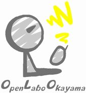

オープンラボ岡山

オープンラボ岡山とは、科学、技術、歴史、芸術などさまざまな分野で
こだわりを持っている方をお招きして話を聞く勉強会です。参加者の関
心を幅を広げる場にしたいと思っています。運営委員は全員ボランティ
アです。興味のある方は是非とも参加ください。
過去の開催
| 開催日 | オープンラボ岡山 | 場所 |
|---|---|---|
| 2009/7/18（土曜日） | 第1回オープンラボ岡山 | ゆうあいセンター 大会議室２ |
| 2009/8/8（土曜日） | 第2回オープンラボ岡山 | さんかく岡山 会議室Ａ |
| 2009/9/12（土曜日） | 第3回オープンラボ岡山 | 岡山市民会館 ４階大会議室 |
| 2009/10/24（土曜日） | 第4回オープンラボ岡山 | 岡山市民会館 ４階大会議室 |
| 2009/12/19（土曜日） | 第5回オープンラボ岡山 | 岡山国際交流センター第２会議室 |
| 2010/2/20（土曜日） | 第6回オープンラボ岡山 | ゆうあいセンター研修室1 |
| 2010/3/20（土曜日） | 第7回オープンラボ岡山 | ゆうあいセンター研修室1 |
| 2010/4/17（土曜日） | 第8回オープンラボ岡山 | ゆうあいセンター研修室1 |
| 2010/6/19（土曜日） | 第9回オープンラボ岡山 | ゆうあいセンター研修室1 |
| 2010/7/17（土曜日） | 第10回オープンラボ岡山 | ゆうあいセンター研修室1 |
| 2010/8/21（土曜日） | 第11回オープンラボ岡山 | 岡山国際交流センター |
| 2010/9/11（土曜日） | 第12回オープンラボ岡山 | 岡山市デジタルミュージアム４F講義室 |
| 2010/10/16（土曜日） | 第13回オープンラボ岡山 | ゆうあいセンター研修室1 |
| 2010/11/20（土曜日） | 第14回オープンラボ岡山 | ゆうあいセンター研修室1 |
| 2010/12/18（土曜日） | 第15回オープンラボ岡山 | 岡山県立大学 大講義室（8206室） |
| 2011/2/19（土曜日） | 第16回オープンラボ岡山 | 岡山市デジタルミュージアム５F展望台 |
| 2011/3/19（土曜日） | 第17回オープンラボ岡山 | 奉還町リブラ3F リブラホールB |
| 2011/4/30（土曜日） | 第18回オープンラボ岡山 | 奉還町リブラ3F リブラホールA |
| 2011/6/25（土曜日） | 第19回オープンラボ岡山 | ホテル・サンピーチ岡山スカイホール |
| 2011/8/13（土曜日） | 第20回オープンラボ岡山 | ゆうあいセンター研修室１ |
| 2011/10/22（土曜日） | 第21回オープンラボ岡山 | 岡山市民会館 204会議室 |
| 2012/2/8（水曜日） | 第22回オープンラボ岡山 | ひら屋 |
| 2013/04/14（日曜日） | 第24回オープンラボ岡山 | 岡山県立図書館 2F多目的ホール |
| 2013/06/23（日曜日） | 第25回オープンラボ岡山 | -- |
| 2013/07/20（土曜日） | 第26回オープンラボ岡山 | 岡山県立大学 |
| 2014/11/15（土曜日） | 第27回オープンラボ岡山 | 奉還町りぶら2F りぶらホールA |
Copyright(C)2009 オープンラボ岡山運営委員会 All rights reserved.